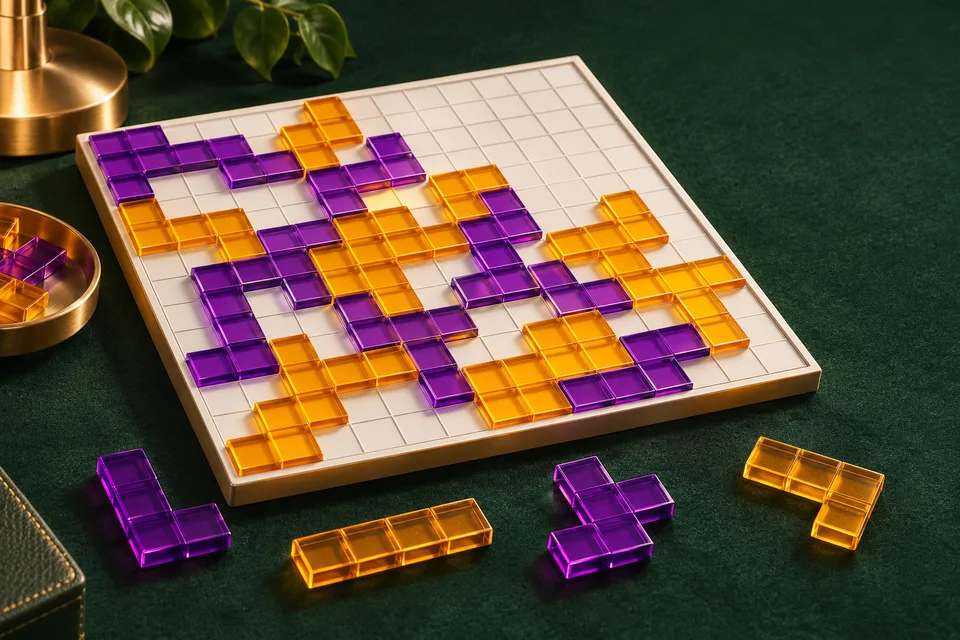
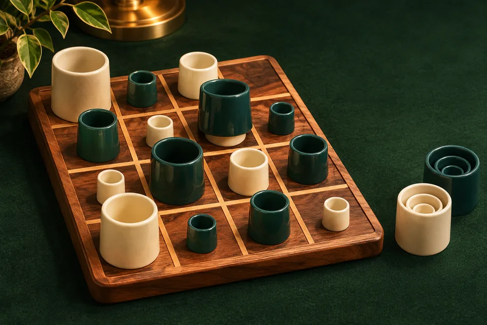
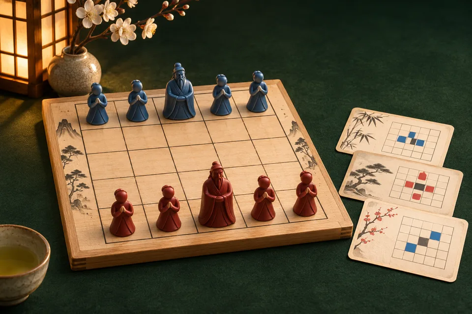
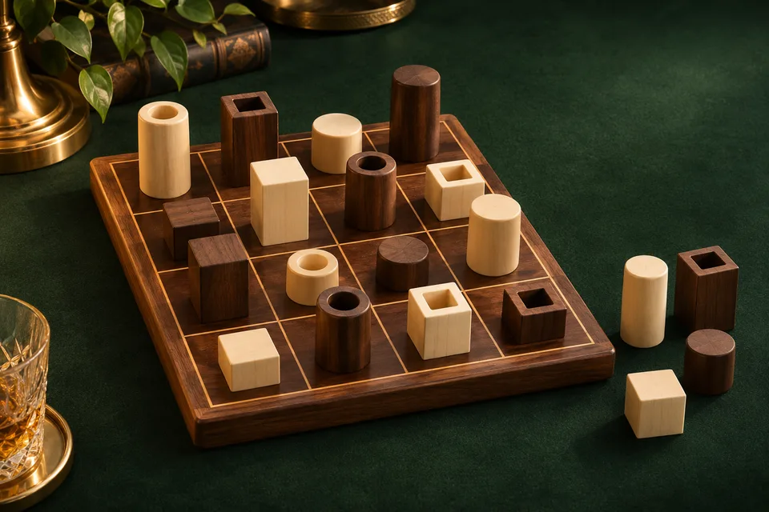
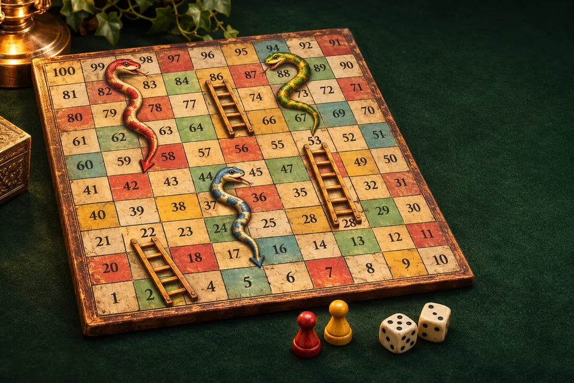
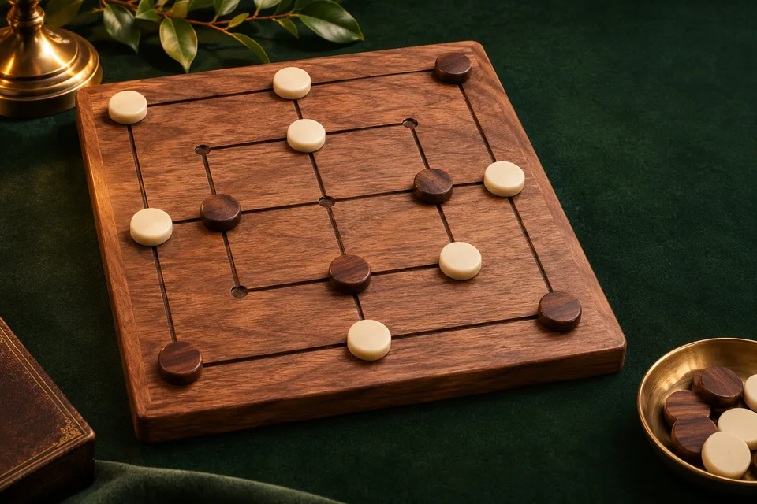
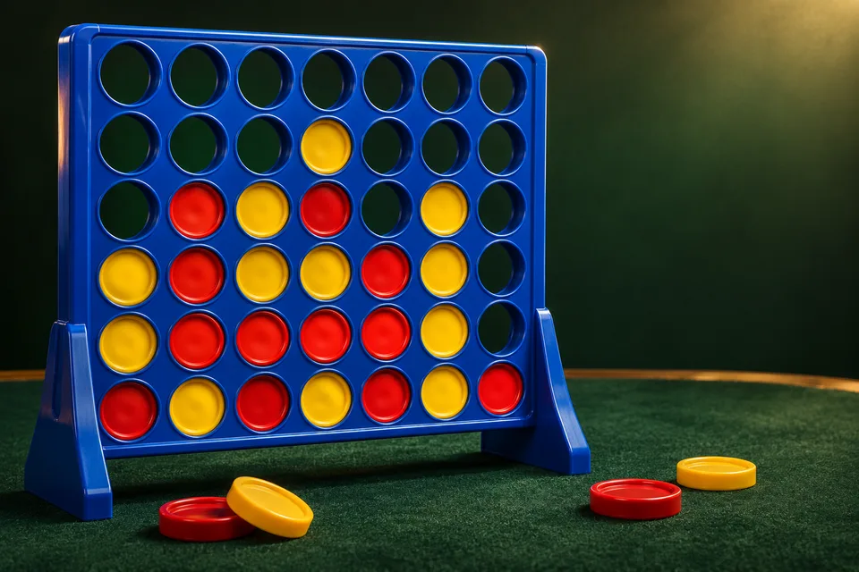
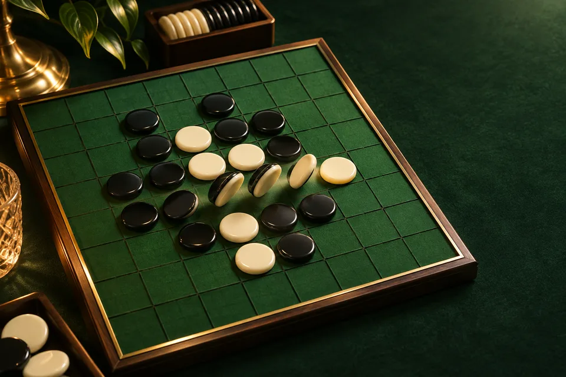
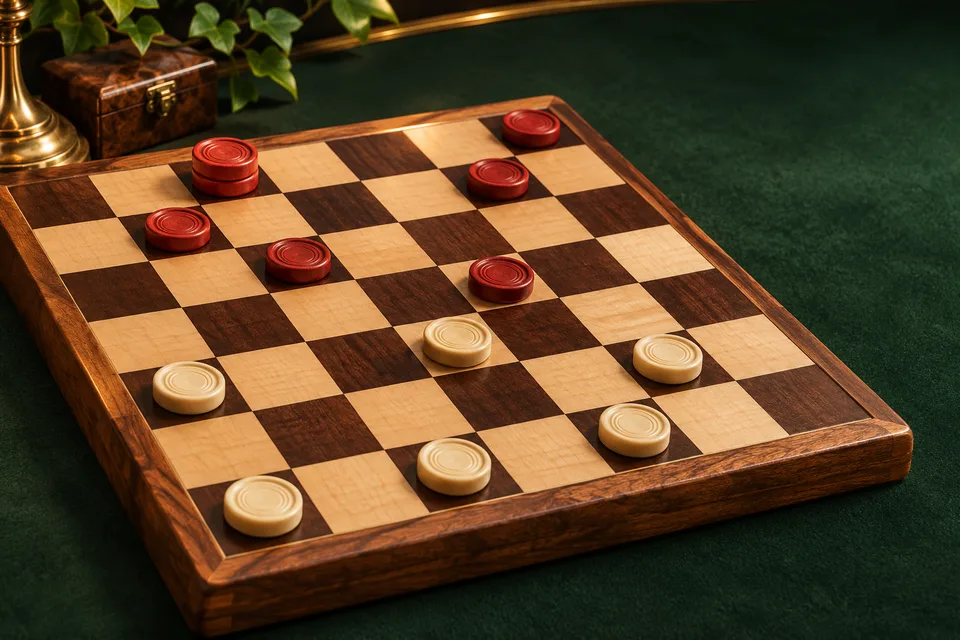
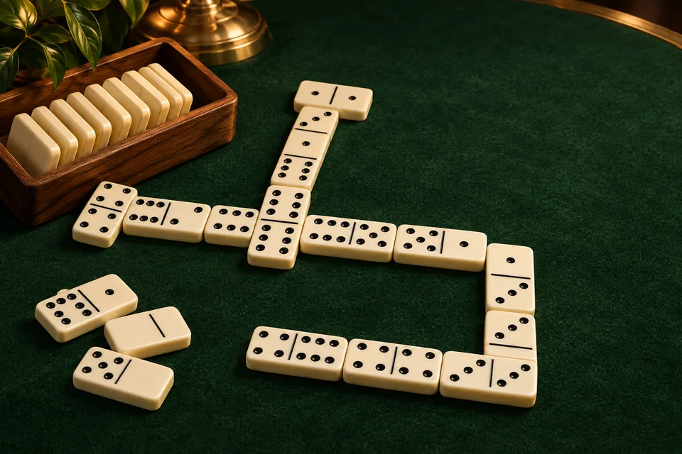

آمادهٔ بازی● بدون نیاز به اینترنت
آمادهٔ بازی● بدون نیاز به اینترنتسانتورینی
ساختوساز و صعود در جزیرهٔ خدایان
بدون نیاز به اینترنتساختمان بساز، هوشمندانه صعود کن و پیش از حریفت به طبقهٔ سوم برس.
بازی را انتخاب کنید؛ در قدم بعد حریف را تعیین کنید.
آمادهٔ بازی● بدون نیاز به اینترنتساختوساز و صعود در جزیرهٔ خدایان
دیوار بسازید و مسیر پیروزی را پیدا کنید.

آمادهٔ بازی● بازی محلی آفلاینقطعهها را از گوشه به هم متصل کنید.

آمادهٔ بازی● بازی محلی آفلایندوئل مهرههای تودرتو و خطهای چهارگانه.

آمادهٔ بازی● بازی محلی آفلایندوئل تاکتیکی با کارتهای حرکت.

آمادهٔ بازی● بازی محلی آفلاینمهره را برای حریف انتخاب کنید.
یک تاس شش، یک حرکت بهیادماندنی.

جدید · مار و پله● محلی و کامپیوتر آفلاینگاهی یک نردبان، همهچیز را عوض میکند.

جدید · دوز 9 مهرهای● محلی و کامپیوتر آفلاینسهتایی بساز، مهره بگیر و مسیر را ببند.

جدید · چهار در خط● محلی و کامپیوتر آفلاینیک ستون، یک مهره، چهار خانه تا پیروزی.

جدید · اتللو● محلی و کامپیوتر آفلاینورق را برگردان؛ گوشهها را از دست نده.

جدید · داما● محلی و کامپیوتر آفلاینگرفتن اجباری و نبرد شاهها.
از بار تا خروج؛ با تاس و نقشه پیش برو.

جدید · دومینو● محلی و کامپیوتر آفلایندست پنهان، قطعههای پیدا و دو سر زنجیره.
راهنمای کوتاه را بخوان، حالت کامپیوتری را انتخاب کن و اولین دستت را شروع کن.
دیدن راهنمای بازیها ←علاقهمندیها، ذخیرههای محلی و بازیهای اخیر را از فضای خودت مدیریت کن.
رفتن به فضای من ←